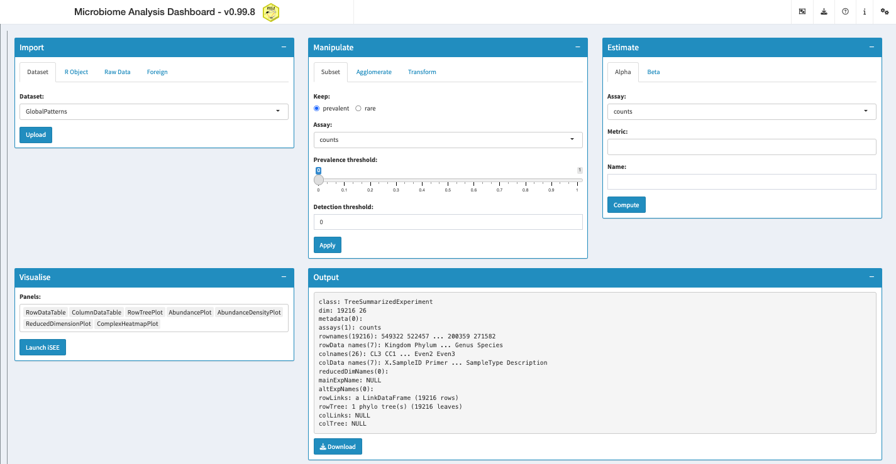

miaDash
Giulio Benedetti
University of Turkugiulio.benedetti@utu.fi
24 July 2025
Source:vignettes/miaDash.Rmd
miaDash.RmdIntroduction
This notebook provides a practical introduction to the Microbiome Analysis Dashboard (miaDash), an interactive app to analyse and explore microbiome data. Feel free to try it online at this address with your data or one of the ready-to-use example datasets. Here, its usage and functionality are described in more detail.
Motivation
Most of the tools available for microbiome data analysis require some knowledge of programming. This represents a burden for practitioners more interested in getting results than learning how to program. To this end, miaDash aims to make microbiome analysis accessible to anyone who needs it, with or without any computational skills.
As a word of caution, while the app removes the burden of programming, it is still critical to understand the nature of microbiome data and how it can be analysed. Such knowledge can be acquired from the online book Orchestrating Microbiome Analysis (OMA) and several other independent resources. The following section presents what is currently possible in the app.
Interface
The interface is divided into five tabs that reflect the steps of a typical microbiome analysis pipeline. First, the dataset of interest can be uploaded through the Import tab, where several data types and file formats are supported. Alternatively, one of the available example datasets can be used for practice. Second, a set of operations can be applied to the dataset through the Manipulate tab, which include methods for subsetting features by prevalence, agglomerating by taxonomic level and transforming assays. Third, the dataset can be analysed through the Estimate tab, which provide common techniques to quantify alpha and beta diversity. Finally, results can be explored through the Visualise tab, where an interactive explorer can be launched with a customisable set of panels that illustrate different aspects of the data. The full catalogue of available panels can be found here.
Tutorial
The app can be used online or locally, depending on resource availability and size of the dataset to analyse. In general, the online version is freely available, so that data of any type can be tested there. However, running the app locally might be a better option for larger datasets (> 1000 features). In this case, you may also consider subsetting and/or agglomerating the data.
Installation
If you decided to run the app locally, make sure to have R installed in your machine and execute the following command:
if (!requireNamespace("BiocManager", quietly = TRUE))
install.packages("BiocManager")
BiocManager::install("miaDash")Once the package is successfully installed, you should have access to the development version of miaDash.
Example
This section shows how to get started with miaDash. If you are using it locally, run the next code chunk to launch the app. Otherwise, you can skip it.
# Import miaDash
library(miaDash)
# Launch miaDash
if (interactive()) {
miaDash()
}As described in Section 1.2, The dashboard consists of five different windows with tools to import, manipulate, analyse and visualise the dataset of choice. After launching the app, it appears as follows:

At first, the variety of options might feel intimidating, so you can click on the question mark on the top right to receive a short tour of the windows available in the app.
Once the dataset was imported and analysed according to your objective, you can choose which visualisations to use from the Visualise window and press the button “Launch iSEEtree” to create and customise the plots. After adjusting the parameters of the different panels, the app might look something like this:

As before, you can click on the question mark on the top right to receive a tour of the panels and their parameters. The best way to get familiar with the interface is to experiment with the parameters below each panel.
Resources
Citation
We hope that miaDash will be useful for your research. Please use the following information to cite the package and the overall approach. Thank you!
## Citation info
citation("miaDash")
#> Warning in citation("miaDash"): could not determine year for 'miaDash' from
#> package DESCRIPTION file
#> To cite package 'miaDash' in publications use:
#>
#> Benedetti G, Lahti L (????). _miaDash: Dashboard for the interactive
#> analysis and exploration of microbiome data_. R package version
#> 1.1.3, <https://github.com/microbiome/miaDash>.
#>
#> A BibTeX entry for LaTeX users is
#>
#> @Manual{,
#> title = {miaDash: Dashboard for the interactive analysis and exploration of microbiome data},
#> author = {Giulio Benedetti and Leo Lahti},
#> note = {R package version 1.1.3},
#> url = {https://github.com/microbiome/miaDash},
#> }Background Knowledge
miaDash originates from the joint effort of the R/Bioconductor community. It is mainly based on the following software:
- R, statistical programming language (R Core Team 2024)
- mia, framework for microbiome data analysis (Borman et al. 2024)
- iSEEtree, TreeSummarizedExperiment interactive explorer (Benedetti et al. 2024)
- iSEE, SummarizedExperiment interactive explorer (Rue-Albrecht et al. 2018)
- TreeSummarizedExperiment, S4 container for hierarchical data (Huang et al. 2020)
- shiny, web app development in R (Chang et al. 2024)
Help
You can reach us by one of the communication channels listed here. We are happy to receive questions, suggestions as well as contributions. For the last point, check the contributor guidelines.
Reproducibility
R session information:
#> R version 4.5.1 (2025-06-13)
#> Platform: x86_64-pc-linux-gnu
#> Running under: Ubuntu 24.04.2 LTS
#>
#> Matrix products: default
#> BLAS: /usr/lib/x86_64-linux-gnu/openblas-pthread/libblas.so.3
#> LAPACK: /usr/lib/x86_64-linux-gnu/openblas-pthread/libopenblasp-r0.3.26.so; LAPACK version 3.12.0
#>
#> locale:
#> [1] LC_CTYPE=en_US.UTF-8 LC_NUMERIC=C LC_TIME=en_US.UTF-8 LC_COLLATE=en_US.UTF-8
#> [5] LC_MONETARY=en_US.UTF-8 LC_MESSAGES=en_US.UTF-8 LC_PAPER=en_US.UTF-8 LC_NAME=C
#> [9] LC_ADDRESS=C LC_TELEPHONE=C LC_MEASUREMENT=en_US.UTF-8 LC_IDENTIFICATION=C
#>
#> time zone: UTC
#> tzcode source: system (glibc)
#>
#> attached base packages:
#> [1] stats4 stats graphics grDevices utils datasets methods base
#>
#> other attached packages:
#> [1] miaDash_1.1.3 shiny_1.11.1 iSEE_2.21.1 SingleCellExperiment_1.31.1
#> [5] SummarizedExperiment_1.39.1 Biobase_2.69.0 GenomicRanges_1.61.1 Seqinfo_0.99.2
#> [9] IRanges_2.43.0 S4Vectors_0.47.0 BiocGenerics_0.55.0 generics_0.1.4
#> [13] MatrixGenerics_1.21.0 matrixStats_1.5.0 BiocStyle_2.37.0
#>
#> loaded via a namespace (and not attached):
#> [1] splines_4.5.1 later_1.4.2 ggplotify_0.1.2
#> [4] tibble_3.3.0 cellranger_1.1.0 polyclip_1.10-7
#> [7] DirichletMultinomial_1.51.0 lifecycle_1.0.4 doParallel_1.0.17
#> [10] miaViz_1.17.9 lattice_0.22-7 MASS_7.3-65
#> [13] MultiAssayExperiment_1.35.5 SnowballC_0.7.1 magrittr_2.0.3
#> [16] sass_0.4.10 rmarkdown_2.29 jquerylib_0.1.4
#> [19] yaml_2.3.10 httpuv_1.6.16 DBI_1.2.3
#> [22] RColorBrewer_1.1-3 abind_1.4-8 purrr_1.1.0
#> [25] fillpattern_1.0.2 ggraph_2.2.1 yulab.utils_0.2.0
#> [28] tweenr_2.0.3 circlize_0.4.16 ggrepel_0.9.6
#> [31] tokenizers_0.3.0 irlba_2.3.5.1 tidytree_0.4.6
#> [34] vegan_2.7-1 rbiom_2.2.1 parallelly_1.45.0
#> [37] permute_0.9-8 pkgdown_2.1.3 DelayedMatrixStats_1.31.0
#> [40] codetools_0.2-20 DelayedArray_0.35.2 ggforce_0.5.0
#> [43] DT_0.33 scuttle_1.19.0 ggtext_0.1.2
#> [46] xml2_1.3.8 tidyselect_1.2.1 shape_1.4.6.1
#> [49] aplot_0.2.8 farver_2.1.2 ScaledMatrix_1.17.0
#> [52] viridis_0.6.5 shinyWidgets_0.9.0 jsonlite_2.0.0
#> [55] GetoptLong_1.0.5 BiocNeighbors_2.3.1 tidygraph_1.3.1
#> [58] decontam_1.29.0 mia_1.17.5 scater_1.37.0
#> [61] iterators_1.0.14 emmeans_1.11.2 systemfonts_1.2.3
#> [64] foreach_1.5.2 tools_4.5.1 ggnewscale_0.5.2
#> [67] treeio_1.33.0 ragg_1.4.0 Rcpp_1.1.0
#> [70] glue_1.8.0 gridExtra_2.3 SparseArray_1.9.1
#> [73] BiocBaseUtils_1.11.2 xfun_0.52 mgcv_1.9-3
#> [76] TreeSummarizedExperiment_2.17.1 dplyr_1.1.4 withr_3.0.2
#> [79] shinydashboard_0.7.3 BiocManager_1.30.26 fastmap_1.2.0
#> [82] bluster_1.19.0 shinyjs_2.1.0 digest_0.6.37
#> [85] rsvd_1.0.5 R6_2.6.1 mime_0.13
#> [88] gridGraphics_0.5-1 estimability_1.5.1 textshaping_1.0.1
#> [91] colorspace_2.1-1 listviewer_4.0.0 tidyr_1.3.1
#> [94] iSEEtree_1.3.1 DECIPHER_3.5.0 graphlayouts_1.2.2
#> [97] htmlwidgets_1.6.4 S4Arrays_1.9.1 pkgconfig_2.0.3
#> [100] gtable_0.3.6 ComplexHeatmap_2.25.2 XVector_0.49.0
#> [103] janeaustenr_1.0.0 htmltools_0.5.8.1 bookdown_0.43
#> [106] rintrojs_0.3.4 clue_0.3-66 scales_1.4.0
#> [109] png_0.1-8 ggfun_0.2.0 knitr_1.50
#> [112] tzdb_0.5.0 reshape2_1.4.4 rjson_0.2.23
#> [115] nlme_3.1-168 shinyAce_0.4.4 cachem_1.1.0
#> [118] GlobalOptions_0.1.2 stringr_1.5.1 parallel_4.5.1
#> [121] miniUI_0.1.2 vipor_0.4.7 desc_1.4.3
#> [124] pillar_1.11.0 grid_4.5.1 vctrs_0.6.5
#> [127] slam_0.1-55 promises_1.3.3 BiocSingular_1.25.0
#> [130] beachmat_2.25.3 xtable_1.8-4 cluster_2.1.8.1
#> [133] beeswarm_0.4.0 evaluate_1.0.4 readr_2.1.5
#> [136] mvtnorm_1.3-3 cli_3.6.5 compiler_4.5.1
#> [139] rlang_1.1.6 crayon_1.5.3 tidytext_0.4.2
#> [142] plyr_1.8.9 fs_1.6.6 ggbeeswarm_0.7.2
#> [145] stringi_1.8.7 viridisLite_0.4.2 BiocParallel_1.43.4
#> [148] Biostrings_2.77.2 lazyeval_0.2.2 colourpicker_1.3.0
#> [151] Matrix_1.7-3 hms_1.1.3 patchwork_1.3.1
#> [154] sparseMatrixStats_1.21.0 ggplot2_3.5.2 gridtext_0.1.5
#> [157] memoise_2.0.1 igraph_2.1.4 bslib_0.9.0
#> [160] ggtree_3.17.1 readxl_1.4.5 ape_5.8-1